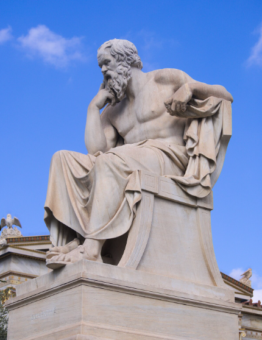

Socrates
Greek Philosopher
"I only know that I know nothing"
Socrates was an ancient Greek philosopher, one of the three greatest figures of the ancient period of Western philosophy (the others were Plato and Aristotle).
Category:
History & Society
Born:
c. 470 BCE, Athens [Greece]
Died:
399 BCE, Athens
Socrates (born c. 470 BCE, Athens [Greece]—died 399 BCE, Athens) ancient Greek philosopher whose way of life, character, and thought exerted a profound influence on Classical antiquity and Western philosophy.
Socrates was a widely recognized and controversial figure in his native Athens, so much so that he was frequently mocked in the plays of comic dramatists. (The Clouds of Aristophanes, produced in 423, is the best-known example.) Although Socrates himself wrote nothing, he is depicted in conversation in compositions by a small circle of his admirers—Plato and Xenophon first among them. He is portrayed in these works as a man of great insight, integrity, self-mastery, and argumentative skill. The impact of his life was all the greater because of the way in which it ended: at age 70, he was brought to trial on a charge of impiety and sentenced to death by poisoning (the poison probably being hemlock) by a jury of his fellow citizens. Plato's Apology of Socrates purports to be the speech Socrates gave at his trial in response to the accusations made against him (Greek apologia means “defense”). Its powerful advocacy of the examined life and its condemnation of Athenian democracy have made it one of the central documents of Western thought and culture.
Life and personality of Socrates
Although the sources provide only a small amount of information about the life and
personality of
Socrates, a unique and vivid picture of him shines through, particularly in some of the works of Plato. We
know the names of his father, Sophroniscus (probably a stonemason), his mother, Phaenarete, and his wife,
Xanthippe, and we know that he had three sons. (In Plato's Theaetetus, Socrates likens his way of
philosophizing to the occupation of his mother, who was a midwife: not pregnant with ideas himself, he
assists others with the delivery of their ideas, though they are often stillborn.) With a snub nose and
bulging eyes, which made him always appear to be staring, he was unattractive by conventional standards.
He served as a hoplite (a heavily armed soldier) in the Athenian army and fought bravely in several
important battles. Unlike many of the thinkers of his time, he did not travel to other cities in order to
pursue his intellectual interests. Although he did not seek high office, did not regularly attend meetings
of the Athenian Assembly (Ecclesia), the city's principal governing body (as was his privilege as an adult
male citizen), and was not active in any political faction, he discharged his duties as a citizen, which
included not only military service but occasional membership in the Council of Five Hundred, which
prepared the Assembly's agenda.
Socrates was not well-born or wealthy, but many of his admirers were, and they included several of the
most politically prominent Athenian citizens. When the democratic constitution of Athens was overthrown
for a brief time in 403, four years before his trial, he did not leave the city, as did many devoted
supporters of democratic rule, including his friend Chaerephon, who had gone to Delphi many years earlier
to ask the oracle whether anyone was wiser than Socrates. (The answer was no.)
The expression of same-sex love was not unusual in Athens at this time, and Socrates was physically
attracted to beautiful young men. This aspect of his personality is most vividly conveyed in the opening
pages of Charmides and in the speech of the young and ambitious general Alcibiades at the end of
Symposium. Socrates' long fits of abstraction, his courage in battle, his resistance to hunger and cold,
his ability to consume wine without apparent inebriation, and his extraordinary self-control in the
presence of sensual attractions are all described with consummate artistry in the opening and closing
pages of Symposium.
Socrates' personality was in some ways closely connected to his philosophical outlook. He was remarkable
for the absolute command he maintained over his emotions and his apparent indifference to physical
hardships. Corresponding to these personal qualities was his commitment to the doctrine that reason,
properly cultivated, can and ought to be the all-controlling factor in human life. Thus he has no fear of
death, he says in Plato's Apology, because he has no knowledge of what comes after it, and he holds that,
if anyone does fear death, his fear can be based only on a pretense of knowledge. The assumption
underlying this claim is that, once one has given sufficient thought to some matter, one's emotions will
follow suit. Fear will be dispelled by intellectual clarity. Similarly, according to Socrates, if one
believes, upon reflection, that one should act in a particular way, then, necessarily, one's feelings
about the act in question will accommodate themselves to one's belief—one will desire to act in that way.
(Thus, Socrates denies the possibility of what has been called “weakness of will”—knowingly acting in a
way one believes to be wrong.) It follows that, once one knows what virtue is, it is impossible not to act
virtuously. Anyone who fails to act virtuously does so because he incorrectly identifies virtue with
something it is not. This is what is meant by the thesis, attributed to Socrates by Aristotle, that virtue
is a form of knowledge.
Socrates versus Plato
We can conclude that Plato was not blind to the civic and religious dangers created by
Socrates. Part of
what makes his Apology so complex and gripping is that it is not a one-sided encomium that conceals the
features of the Socratic way of life that lay behind the anxiety and resentment felt by many of his fellow
citizens. Plato, of course, leaves no doubt that he sides with Socrates and against Athens, but in doing
so he allows us to see why Socrates had enemies as well as friends. The multisidedness of Plato's portrait
adds to its verisimilitude and should increase our confidence in him as a source of our understanding of
the historical Socrates. A defense of Socrates that portrayed him as an innocuous preacher of moral
pieties would have left us wondering why he was sentenced to death, and indeed why anyone bothered to
indict him in the first place.
Plato gives no hint in his Apology that he had any reservations about the way Socrates led his life or the
doctrines that guided him; the format of the Apology prevents him from doing so. He has made the decision
to let Socrates speak for himself in this work and to refrain from offering any of his own reflections on
the justice or injustice of the charges against his teacher. But, in the Republic, he puts into the mouth
of its principal interlocutor, “Socrates,” an observation about the corrosive power that philosophy can
have when it takes hold at too early an age. When young people first hear philosophical questions about
the traditional moral standards they have learned from their parents and their community, and when they
see that it is difficult to defend these orthodoxies without falling into contradiction, they are prone to
reject all traditional morality and to become essentially lawless. For this reason, philosophy may come to
be seen as a dangerous and disreputable pursuit. The Socrates of the Republic therefore suggests that in
an ideal society the young should not be exposed to ethical doubt until they are well into their maturity.
This, of course, is not a restriction that the historical Socrates imposed on himself. In Plato's Apology,
Socrates prides himself on addressing his questions to every Athenian—no one, in his view, is too young or
too old for the examined life—and he freely acknowledges that the young love to see their elders
embarrassed when they are unable to defend their beliefs. Whereas the Socrates of Plato's Apology assumes
that there is no need to place limits on philosophical inquiry, the Socrates of the Republic—who speaks as
the mouthpiece of Plato—holds that in an ideal society this kind of activity would be carefully regulated.
Similarly, in Plato's Laws, the main speaker, an unnamed visitor from Athens, praises Sparta and Crete for
forbidding the young to criticize the laws of their communities. Plato's great admiration for Socrates was
all the more remarkable because it coexisted not only with a recognition of why Socrates was considered
dangerous but also with his belief that Socrates was, to some degree, guilty of impiety and of corrupting
the young.
The legacy of Socrates
Socrates' thought was so pregnant with possibilities, his mode of life so provocative,
that he inspired a
remarkable variety of responses. One of his associates, Aristippus of Cyrene—his followers were called
“Cyrenaics,” and their school flourished for a century and a half—affirmed that pleasure is the highest
good. (Socrates seems to endorse this thesis in Plato's Protagoras, but he attacks it in Gorgias and other
dialogues.) Another prominent follower of Socrates in the early 4th century BCE, Antisthenes, emphasized
the Socratic doctrine that a good man cannot be harmed; virtue, in other words, is by itself sufficient
for happiness. That doctrine played a central role in a school of thought, founded by Diogenes of Sinope,
that had an enduring influence on Greek and Roman philosophy: Cynicism. Like Socrates, Diogenes was
concerned solely with ethics, practiced his philosophy in the marketplace, and upheld an ideal of
indifference to material possessions, political power, and conventional honours. But the Cynics, unlike
Socrates, treated all conventional distinctions and cultural traditions as impediments to the life of
virtue. They advocated a life in accordance with nature and regarded animals and human beings who did not
live in societies as being closer to nature than contemporary human beings. (The term cynic is derived
from the Greek word for dog. Cynics, therefore, live like beasts.) Starting from the Socratic premise that
virtue is sufficient for happiness, they launched attacks on marriage, the family, national distinctions,
authority, and cultural achievements. But the two most important ancient schools of thought that were
influenced by Socrates were Stoicism, founded by Zeno of Citium, and Skepticism, which became, for many
centuries, the reigning philosophical stance of Plato's Academy after Arcesilaus became its leader in 273
BCE. The influence of Socrates on Zeno was mediated by the Cynics, but Roman Stoics—particularly
Epictetus—regarded Socrates as the paradigm of sagacious inner strength, and they invented new arguments
for the Socratic thesis that virtue is sufficient for happiness. The Stoic doctrine that divine
intelligence pervades the world and rules for the best borrows heavily from ideas attributed to Socrates
by Xenophon in the Memorabilia.
Like Socrates, Arcesilaus wrote nothing. He philosophized by inviting others to state a thesis; he would
then prove, by Socratic questioning, that their thesis led to a contradiction. His use of the Socratic
method allowed Arcesilaus and his successors in the Academy to hold that they were remaining true to the
central theme of Plato's writings. But, just as Cynicism took Socratic themes in a direction Socrates
himself had not developed and indeed would have rejected, so, too, Arcesilaus and his Skeptical followers
in Plato's Academy used the Socratic method to advocate a general suspension of all convictions whatsoever
and not merely a disavowal of knowledge. The underlying thought of the Academy during its Skeptical phase
is that, because there is no way to distinguish truth from falsity, we must refrain from believing
anything at all. Socrates, by contrast, merely claims to have no knowledge, and he regards certain theses
as far more worthy of our credence than their denials.
Although Socrates exerted a profound influence on Greek and Roman thought, not every major philosopher of
antiquity regarded him as a moral exemplar or a major thinker. Aristotle approves of the Socratic search
for definitions but criticizes Socrates for an overintellectualized conception of the human psyche. The
followers of Epicurus, who were philosophical rivals of the Stoics and Academics, were contemptuous of
him.
With the ascendancy of Christianity in the medieval period, the influence of Socrates was at its nadir: he
was, for many centuries, little more than an Athenian who had been condemned to death. But when Greek
texts, and thus the works of Plato, the Stoics, and the Skeptics, became increasingly available in the
Renaissance, the thought and personality of Socrates began to play an important role in European
philosophy. From the 16th to the 19th century the instability and excesses of Athenian democracy became a
common motif of political writers; the hostility of Xenophon and Plato, fed by the death of Socrates,
played an important role here. Comparisons between Socrates and Christ became commonplace, and they
remained so even into the 20th century—though the contrasts drawn between them, and the uses to which
their similarities were put, varied greatly from one author and period to another. The divine sign of
Socrates became a matter of controversy: was he truly inspired by the voice of God? Or was the sign only
an intuitive and natural grasp of virtue? (So thought Montaigne.) Did he intend to undermine the
irrational and merely conventional aspects of religious practice and thus to place religion on a
scientific footing? (So thought the 18th-century Deists.)
In the 19th century Socrates was regarded as a seminal figure in the evolution of European thought or as a
Christ-like herald of a higher existence. G.W.F. Hegel saw in Socrates a decisive turn from pre-reflective
moral habits to a self-consciousness that, tragically, had not yet learned how to reconcile itself to
universal civic standards. Søren Kierkegaard, whose dissertation examined Socratic irony, found in
Socrates a pagan anticipation of his belief that Christianity is a lived doctrine of almost impossible
demands; but he also regarded Socratic irony as a deeply flawed indifference to morality. Friedrich
Nietzsche struggled throughout his writings against the one-sided rationalism and the destruction of
cultural forms that he found in Socrates.
In contrast, in Victorian England Socrates was idealized by utilitarian thinkers as a Christ-like martyr
who laid the foundations of a modern, rational, scientific worldview. John Stuart Mill mentions the legal
executions of Socrates and of Christ in the same breath in order to call attention to the terrible
consequences of allowing common opinion to persecute unorthodox thinkers. Benjamin Jowett, the principal
translator of Plato in the late 19th century, told his students at Oxford, “The two biographies about
which we are most deeply interested (though not to the same degree) are those of Christ and Socrates.”
Such comparisons continued into the 20th century: Socrates is treated as a “paradigmatic individual”
(along with Buddha, Confucius, and Christ) by the German existentialist philosopher Karl Jaspers.
The conflict between Socrates and Athenian democracy shaped the thought of 20th-century political
philosophers such as Leo Strauss, Hannah Arendt, and Karl Popper. The tradition of self-reflection and
care of the self initiated by Socrates fascinated Michel Foucault in his later writings. Analytic
philosophy, an intellectual tradition that traces its origins to the work of Gottlob Frege, G.E. Moore,
and Bertrand Russell in the late 19th and early 20th century, uses, as one of its fundamental tools, a
process called “conceptual analysis,” a form of nonempirical inquiry that bears some resemblance to
Socrates' search for definitions.
But the influence of Socrates is felt not only among philosophers and others inside the academy. He
remains, for all of us, a challenge to complacency and a model of integrity.